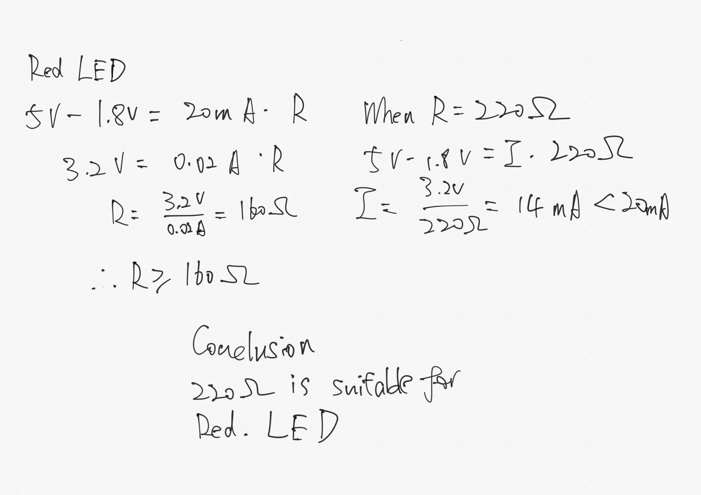
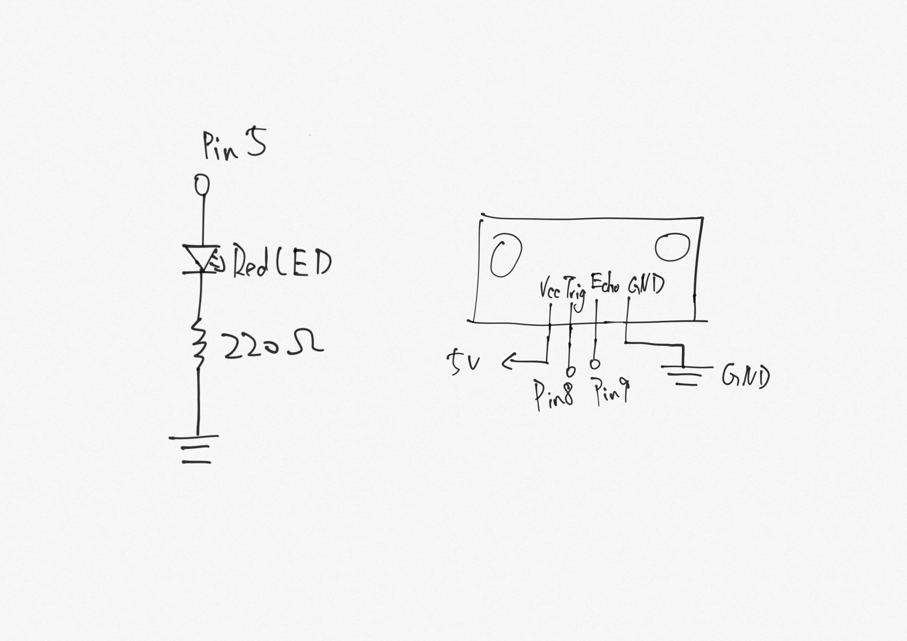
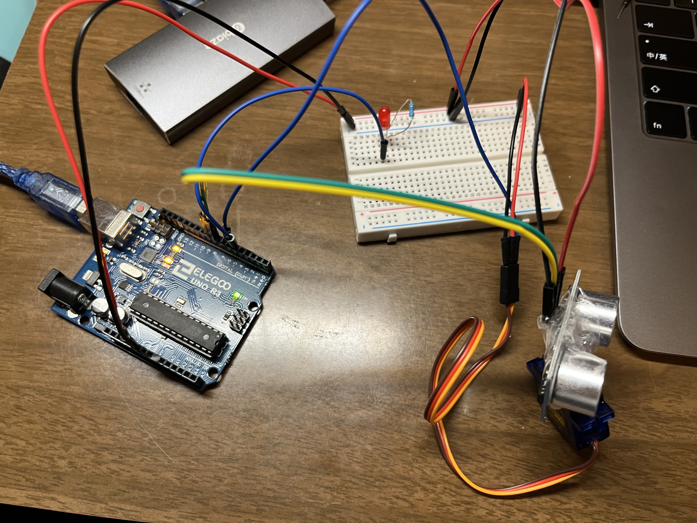

Overview
I created a device with servo motor and ultrasonic sensor to monitor a rader and displayed the results of the sensor to the web with p5.js. Also with a button pressed on the web, the alert LED will light up.

Schematic
- I have first calculated the appropriate resistance for the red LED. The ultrasonic do not requrie a resistro. 
- Then with the value of resistor, I have drew the schematic for the circuit. 
Circuit
According to the schematic, I have built the circuit with Arduino on the breadboard.
Firmware
Arduino Code
#include
const int trigPin = 8; // Pin 9 is Trig Pin
const int echoPin = 9; // Pin 10 is Echo Pin
long duration; // maximum range of untrasonic sensor
int distance; // initialize distance
Servo myServo; // create servo object to control a servo
void setup() {
pinMode(trigPin, OUTPUT); // Sets the trigPin as an Output
pinMode(echoPin, INPUT); // Sets the echoPin as an Input
Serial.begin(9600); // Starts the serial communication
myServo.attach(6); // attaches the servo on pin 6 to the servo object
}
void loop() {
for (int i=15; i <= 165; i++){
myServo.write(i); // rotate the servo to the specified angle
delay(12); // delay for 12 milliseconds
distance = calculateDistance(); // use function to calculate distance
Serial.print("["); // print "[" to start list
Serial.print(i); // print angle value
Serial.print(","); // print comma
Serial.print(distance); // print distance value
Serial.println("]"); // print "]" to end list
}
for (int i=165; i >= 15; i--){
myServo.write(i); // rotate the servo to the specified angle
delay(12); // delay for 12 milliseconds
distance = calculateDistance(); // use function to calculate distance
Serial.print("["); // print "[" to start list
Serial.print(i); // print angle value
Serial.print(","); // print comma
Serial.print(distance); // print distance value
Serial.println("]"); // print "]" to end list
}
if (Serial.available() > 0) { // if there's serial data
int inByte = Serial.read(); // read it
Serial.write(inByte); // send it back out as raw binary data
analogWrite(5, inByte); // use it to set the LED brightness
}
}
// create function to calculate distance
int calculateDistance(){
digitalWrite(trigPin, LOW); // Clears the trigPin
delayMicroseconds(2); // delay for 2 micro seconds
digitalWrite(trigPin, HIGH); // Sets the trigPin on HIGH state for 10 micro seconds
delayMicroseconds(10); // delay 10 micro seconds
digitalWrite(trigPin, LOW); // set the trigPin to low
duration = pulseIn(echoPin, HIGH); // Reads the echoPin, returns the sound wave travel time in microseconds
distance = duration * 0.034 / 2; // Calculating the distance
return distance; // return the distance value;
}
JavaScript Code
var serial; // variable to hold an instance of the serialport library
var portName = '/dev/cu.usbmodem142401'; //name of my port
var dataarray = []; //some data coming in over serial!
function setup() {
serial = new p5.SerialPort(); // make a new instance of the serialport library
serial.on('list', printList); // set a callback function for the serialport list event
serial.on('connected', serverConnected); // callback for connecting to the server
serial.on('open', portOpen); // callback for the port opening
serial.on('data', serialEvent); // callback for when new data arrives
serial.on('error', serialError); // callback for errors
serial.on('close', portClose); // callback for the port closing
serial.list(); // list the serial ports
serial.open(portName); // open a serial port
createCanvas(windowWidth/2, windowHeight/2).center();
noFill();
stroke(color(0, 255, 0));
var button = createButton("Alert"); //create button
button.mousePressed(keyPressed); // call keypressed function
button.position(windowWidth/2 - 75, windowHeight/2 - 250);
button.size(150,50);
}
// get the list of ports:
function printList(portList) {
// portList is an array of serial port names
for (var i = 0; i < portList.length; i++) {
// Display the list the console:
print(i + " " + portList[i]);
}
}
function serverConnected() {
print('connected to server.');
}
function portOpen() {
print('the serial port opened.')
}
function serialError(err) {
print('Something went wrong with the serial port. ' + err);
}
function portClose() {
print('The serial port closed.');
}
function serialEvent() {
if (serial.available()) {
var datastring = serial.readLine(); // readin some serial
var newarray;
try {
newarray = JSON.parse(datastring); // can we parse the serial
if (typeof newarray == 'object') {
dataarray = newarray;
}
} catch(err) {
}
}
}
function keyPressed() {
serial.write(255); // serial write the brightness.
}
function draw() {
translate(width/2, height); // translate the center of canvas to the mid bottom
background(0); // set backgroud to black
const count = 10; // number of semicircle
const offset = frameCount % (400 / count); // offset the semicircle to diffuse
// loop to draw multiple semicircle
for(let i = 0; i < count + 10; i++){
strokeWeight(max((count - i) / 10, 0.15));
arc(0, 0, offset + 400 / count * i, offset + 400 / count * i, PI, 0);
}
// rotate the canvas according to the arduino data
rotate(-(dataarray[0] * (PI/180)));
strokeWeight(2);
// store the distance from arduino data
distance = dataarray[1];
// constrain the distance to maximum of 33
distance = constrain(distance, 0, 33);
// draw the line according to the distance
line(0, 0, distance*10, 0);
// change the stroke color if distance too close
if (distance <= 10) {
stroke(color(255, 0, 0));
}else{
// change back if distance is far
stroke(color(0, 255, 0));
}
}